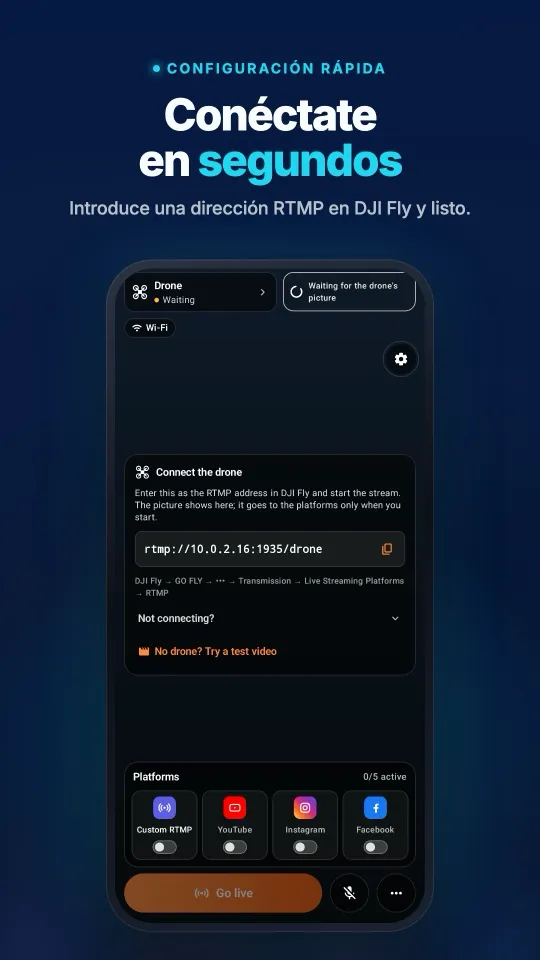
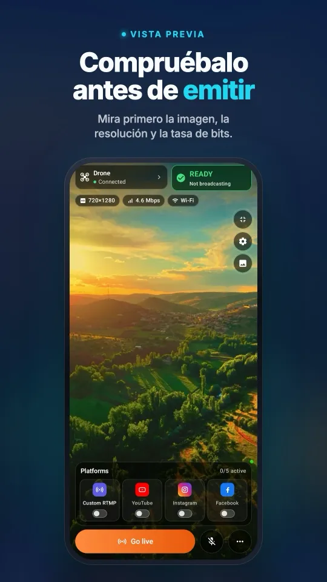
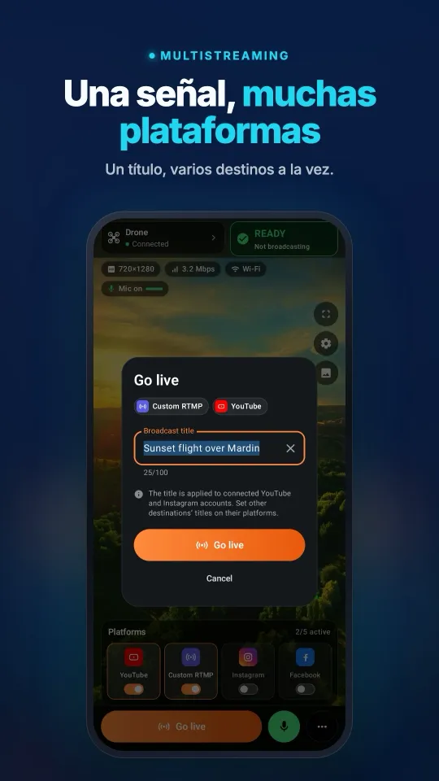
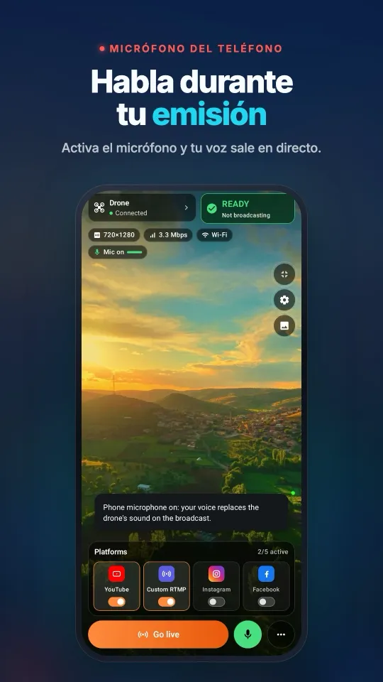
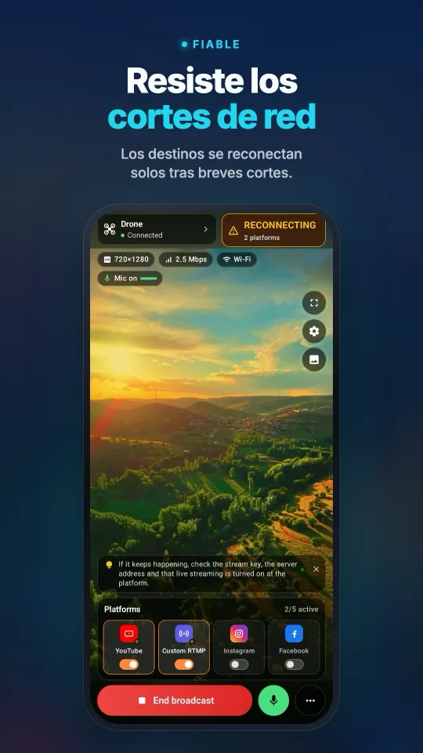

Cómo transmitir en directo con una cámara Osmo Action a Instagram y TikTok
Las cámaras Osmo Action transmiten por RTMP desde DJI Mimo a hasta 1080p, desde un casco, un manillar, un coche o un trípode. Por sí sola, DJI Mimo llega a Facebook, YouTube o a una dirección RTMP; envía esa transmisión RTMP a Stream My Drone en un ordenador y la misma imagen irá a Instagram, TikTok, YouTube, Twitch o Kick a la vez.
En resumen
- Las Osmo Action 6, 5 Pro, 4 y 3 transmiten por RTMP desde DJI Mimo (1.2.20 o posterior) a 480p, 720p o 1080p, con hasta 6 Mbps.
- La cámara se conecta ella misma a una red wifi; ponla en la misma red que el ordenador, o en un punto de acceso que compartan.
- Stream My Drone envía la transmisión a varias plataformas a la vez, incluida Instagram por RTMPS.
- El formato vertical de 1080×1920 con relleno difuminado mantiene la toma de acción completa en la pantalla del móvil.
- La cámara virtual también convierte la Osmo Action en una cámara inalámbrica para OBS, Zoom o TikTok LIVE Studio.
Configura el directo de la Osmo Action
- Abre Stream My DroneInstala Stream My Drone en un Mac o un PC con Windows y apunta la dirección que muestra, por ejemplo
rtmp://192.168.1.20:1935/drone. - Conecta la cámara en DJI MimoActualiza DJI Mimo y el firmware de la cámara, conecta la Osmo Action y abre la opción de transmisión en directo.
- Elige RTMP y el wifiSelecciona RTMP y la red wifi a la que debe conectarse la cámara: la red del ordenador, o el punto de acceso de un teléfono que también use el ordenador.
- Introduce la dirección y empiezaEscribe la dirección de Stream My Drone, elige 1080p y el bitrate más alto que aguante la red, y empieza. La vista previa aparece en la app.
- Añade las plataformas y sal en directoAñade Instagram, TikTok, YouTube, Twitch o cualquier servidor RTMP y pulsa INICIAR TRANSMISIÓN.

Las demás cámaras DJI con transmisión en directo por RTMP aparecen en la guía de cámaras Osmo.
Dónde brilla un directo con cámara de acción
- Deporte y rutas. Ciclismo, moto, esquí o running: un único punto de vista, en directo en varias plataformas.
- Entre bastidores. Monta la cámara en un plató o en la pared de un taller y transmite mientras trabajas.
- Un segundo ángulo. Usa la cámara virtual para añadir la Osmo Action como fuente inalámbrica en OBS junto a tu cámara principal; consulta la guía de la webcam.
- Directos a prueba de mal tiempo. La cámara aguanta la lluvia y el polvo; el ordenador se queda a cubierto en el coche o en la tienda de campaña.
Así se ve en tu móvilDe la conexión con DJI Fly a una emisión en varias plataformas, todo en una sola pantalla.




Alcance y red
La cámara envía su transmisión por wifi al ordenador, así que tiene que mantenerse dentro del alcance de esa red. Para tomas en movimiento, un punto de acceso móvil cerca de la cámara —con el ordenador conectado al mismo punto de acceso— mantiene corto el enlace. La subida a las plataformas usa entonces los datos móviles del punto de acceso, unos 6 Mbps por destino.
| Configuración | Ideal para |
|---|---|
| Wifi de casa o del recinto | Ángulos fijos, talleres, eventos |
| Punto de acceso móvil cerca de la cámara y del ordenador | Rodajes al aire libre y tomas cortas en movimiento |
| Router de viaje en un coche o una furgoneta | Rutas en las que el ordenador viaja contigo |
Cuando no funciona
- La cámara no se conecta: no está en la red del ordenador, o una red de invitados aísla los dispositivos.
- La transmisión se corta en movimiento: la cámara ha salido del alcance del wifi; acerca el punto de acceso o baja el bitrate.
- No aparece la opción de directo: actualiza DJI Mimo a la versión 1.2.20 o posterior y el firmware de la cámara.
- Instagram rechaza la transmisión: crea un nuevo vídeo en directo en instagram.com y actualiza la clave; cada clave funciona una sola vez.
Preguntas
¿Puede la Osmo Action 5 Pro transmitir en directo a Instagram?
No solo con DJI Mimo. Transmite a Stream My Drone por RTMP y la app reenviará la imagen a Instagram por RTMPS.
¿Qué cámaras Osmo Action admiten transmisión en directo por RTMP?
Según DJI: Osmo Action 6, 5 Pro, 4 y 3, DJI Action 2 y la primera Osmo Action (720p como máximo).
¿Puedo transmitir con una Osmo Action a Twitch y YouTube a la vez?
Sí. Añade ambos destinos en Stream My Drone y pulsa INICIAR TRANSMISIÓN.
¿A qué distancia puede estar la cámara del ordenador?
Hasta donde llegue el wifi. La cámara transmite al ordenador por esa red, así que mantenla dentro del alcance o lleva un punto de acceso contigo.
Transmite tu dron en directo desde el móvil
Stream My Drone para Android y iPhone recibe la imagen de DJI Fly y la envía a YouTube, Instagram, Facebook, TikTok, Twitch, Kick o tu propio servidor, a varios a la vez. Pago único, sin suscripción.
App gratuita para Mac y Windows →Cómo funciona la aplicación →

Más guías
Cómo hacer una transmisión en directo con un dron (paso a paso, 2026)
Cómo transmitir en directo con un dron a YouTube, Instagram, TikTok o Facebook: qué necesitas, los 4 métodos, DJI Fly RTMP en 5 pasos, velocidad de internet y soluciones.
¿El DJI RC 2 no transmite en directo sin micrófono? Cómo solucionar “No built-in mic in current device”
DJI Fly 1.16 no inicia la transmisión del RC 2 sin micrófono. Por qué pasa, qué funciona (micrófono USB-C, AirPods) y una solución sin hardware con un móvil Android.
Cómo transmitir en directo con un DJI Flip
Transmite en directo con DJI Flip y RC 2, RC-N3 o RC-N2: RTMP con teléfono u ordenador, control con la palma y desde el móvil, encuadre vertical y plataformas.
Cómo transmitir en directo con un DJI Lito X1
Transmite en directo con un DJI Lito X1 y RC 2, RC-N3 o RC-N2: ajustes RTMP de DJI Fly, flujos con teléfono u ordenador, plataformas y solución de problemas.
Cómo transmitir en directo con un DJI Lito 1
Transmite en directo con un DJI Lito 1 y RC-N3, RC-N2 o RC 2: ajustes RTMP de DJI Fly, recepción en ordenador o teléfono, plataformas y solución de problemas.
Cómo transmitir en directo con un DJI Air 3S
Transmite en directo con un DJI Air 3S a YouTube, Instagram o Facebook. Elige el control, conecta el RTMP de DJI Fly a un teléfono u ordenador y revisa la imagen.
Cómo transmitir en directo con un DJI Air 3
Haz un directo con tu DJI Air 3 en YouTube, Instagram o Facebook: elige el control, envía el RTMP de DJI Fly a un teléfono u ordenador y comprueba la imagen de salida.
Cómo transmitir en directo con un DJI Mavic 4 Pro
Transmite en directo con tu DJI Mavic 4 Pro y RC 2 o RC Pro 2 a un teléfono u ordenador: RTMP de DJI Fly, diferencias de micrófono, límite de 720p y plataformas.
Cómo transmitir en directo con un DJI Mavic 3, Classic o Pro
Transmite en directo con un DJI Mavic 3, Classic o Pro y RC-N1 o RC Pro. Por qué el DJI RC no puede, recepción en teléfono, RTMP en ordenador y límites de calidad.
Cómo transmitir en directo con un DJI Mini 3 Pro
Transmite en directo con un DJI Mini 3 Pro usando el RC-N1, DJI Fly en tu teléfono y Stream My Drone en un ordenador. Por qué el DJI RC original no sirve para esta ruta RTMP.
Cómo transmitir en directo con un DJI Mini 3
Configura el directo del DJI Mini 3 con el RC-N1 y DJI Fly hacia Stream My Drone en un ordenador. Límites del DJI RC, vista en directo a 720p y publicación en plataformas.
Cómo transmitir en directo con un DJI Mini 5 Pro
Transmite en directo con un DJI Mini 5 Pro y RC 2 o RC-N3. Configura RTMP en DJI Fly, usa un móvil o un ordenador y envía la imagen del dron a YouTube, Instagram o Facebook.
Cómo transmitir en directo con un DJI Mini 4 Pro
Transmite en directo con un DJI Mini 4 Pro y RC 2 o RC-N2. Configuración con móvil y ordenador, ajustes RTMP de DJI Fly, requisito de micrófono y comprobaciones en la plataforma.
Detecta y cuenta animales en directo desde tu dron DJI
Stream My Drone detecta cabras, ovejas, vacas, caballos, burros y aves de corral en la imagen en directo de tu dron, los marca en la transmisión y los cuenta, todo en tu ordenador.
Transmisión en directo RTMP con DJI Fly: la configuración completa
Cómo configurar la transmisión en directo RTMP en DJI Fly: dónde está el ajuste, qué dirección introducir, cómo conectar el control remoto y el ordenador, y cómo solucionar fallos.
Por qué DJI Fly no puede transmitir en directo a Instagram (y la solución)
DJI Fly no tiene opción para Instagram y su cliente RTMP no admite el RTMPS cifrado que exige Instagram. Te explicamos por qué y cómo hacer un directo en Instagram con tu dron DJI.
Convierte tu dron DJI en la webcam de tu ordenador
Convierte tu dron DJI en una webcam para TikTok LIVE Studio, OBS, Zoom, Google Meet o Teams con la cámara virtual de Stream My Drone. Configuración, ideas y soluciones.
Cómo transmitir en directo con un DJI Neo
Cómo transmitir en directo con un DJI Neo: qué modo de control funciona (móvil, RC-N3, gafas), RTMP en DJI Fly y cómo emitir en Instagram, TikTok o YouTube con Stream My Drone.
Cómo transmitir en directo con un DJI Avata 2
Cómo transmitir en directo vídeo FPV desde un DJI Avata 2: comparte la vista de las Goggles 3 con DJI Fly en tu móvil, envíala por RTMP y emite en Instagram, TikTok o YouTube.
Transmite en directo con tu cámara DJI Osmo a Instagram, TikTok y más
DJI Mimo puede transmitir por RTMP desde las cámaras Osmo Action, Osmo Pocket y Osmo 360. Envíalo a Stream My Drone para emitir en directo en Instagram, TikTok y YouTube a la vez.
Cómo transmitir en directo con una Osmo Pocket 3 a Instagram y TikTok
Cómo transmitir en directo con una DJI Osmo Pocket 3 por RTMP desde DJI Mimo a Instagram, TikTok y YouTube a la vez, y usarla como webcam inalámbrica, con Stream My Drone.
Cómo hacer un directo en TikTok con un dron DJI
Transmite en directo en TikTok con tu dron DJI desde DJI Fly: con clave de transmisión de TikTok, o sin ella a través de TikTok LIVE Studio y una cámara virtual. Ajustes y soluciones.
Cómo hacer un directo en Instagram con un dron DJI
Haz un directo en Instagram con tu dron DJI: consigue la URL y la clave de transmisión en instagram.com, envía el RTMP de DJI Fly a Stream My Drone y pulsa Iniciar directo.
Cómo transmitir en directo con un dron DJI a YouTube
Transmite en directo con tu dron DJI a YouTube: activa las emisiones en directo, copia la clave de YouTube Studio y envía el RTMP de DJI Fly a Stream My Drone. Ajustes y consejos.
Cómo hacer un directo en Facebook con un dron DJI
Transmite en directo en Facebook con tu dron DJI: consigue la URL del servidor RTMPS y la clave en Live Producer, envía la señal de DJI Fly a Stream My Drone y sal en directo.
Cómo transmitir con un dron DJI en Twitch
Transmite en directo en Twitch con tu dron DJI: copia tu clave de transmisión del Panel de control del creador, añade Twitch como destino RTMP personalizado en Stream My Drone y emite.
Cómo transmitir con un dron DJI en Kick
Transmite en directo en Kick con tu dron DJI: copia la URL y la clave de transmisión del panel de Kick, añádelas como destino RTMP personalizado en Stream My Drone y sal en directo.
Transmite tu dron DJI en varias plataformas a la vez
Envía una sola transmisión en directo de tu dron DJI a TikTok, Instagram, YouTube, Facebook, Twitch y Kick a la vez con Stream My Drone: gratis, en local y sin servicio de restream.
Stream My Drone vs Restream: ¿cuál elegir para tu dron?
¿Transmitir tu dron DJI a varias plataformas con la nube de Restream o con Stream My Drone en tu ordenador? Precio, marca de agua, Instagram y vídeo vertical.
Transmite tu dron DJI sin configurar NGINX ni OBS
La forma habitual de meter DJI Fly en OBS es un servidor RTMP de NGINX, un archivo de configuración y una fuente multimedia. Esto es lo que implica, y cómo saltártelo con una sola app.